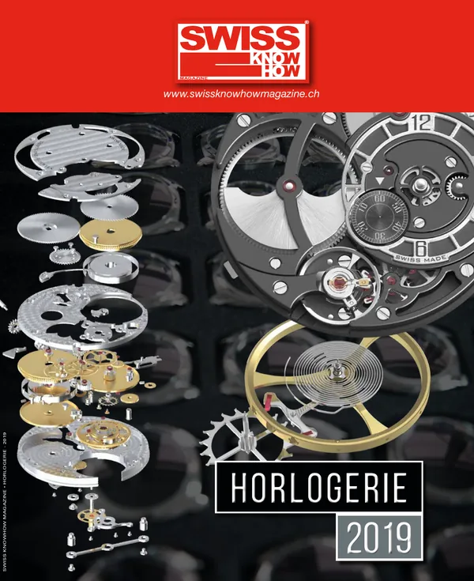

« Le monde progresse grâce aux choses impossibles qui ont été réalisées. »
Texte intégral
Leader incontesté dans son domaine, l’entreprise DM SURFACES spécialisée dans l’ultra-personnalisation, la production et la décoration haut de gamme de composants horlogers bénéficie d’une croissance continue depuis sa fondation en 2007. Aujourd’hui à Saint-Imier dans un nouveau bâtiment, l’entreprise ne cesse de se développer et d’investir dans les technologies de pointe dans le but d'innover et de proposer à sa clientèle de nouvelles perspectives dans le domaine du décor esthétique et fonctionnel. Les technologies de pointe comme le laser s’associent aux métiers traditionnels de la décoration horlogère et des traitements galvaniques afin de proposer un mix produit toujours plus évolué.
Activités variées
Face aux demandes clients toujours plus complètes et forte d’une solide réputation dans le traitement galvanique de qualité, l’entreprise n’a cessé d’investir dans le but de proposer à sa clientèle un mix produit toujours plus diversifié leur permettant de se démarquer de la concurrence.
Nos deux principaux core-business, galvanoplastie et technique laser, soutenus par une multitude d’autres métiers, sont mis à profit pour proposer des solutions que nos clients pensaient relever de l’impossible.
Technologies de pointe
Leader dans le domaine, DM Surfaces ne cesse d’investir pour bénéficier des dernières technologies de pointe et proposer des solutions toujours plus innovantes à ses clients. La diversité de notre parc machine laser nous permet de proposer différentes techniques allant de la gravure simple et ablation, à la texturisation sur forme géométrique complexe, en passant par la découpe et les micro usinages. Notre nouvelle cellule R&D va nous permettre d’accélérer l’innovation dans le domaine de la technique laser.
Ainsi, les techniques traditionnelles de décoration et de fabrication de composants se mêlent à des solutions plus avant-gardistes comme la céramique hybride et la technique laser. Nous proposons un produit terminé avec un maximum de valeur ajoutée dans un "time to market" toujours plus court.
Grâce à la parfaite maîtrise de la galvanoplastie, soutenue par des installations à la pointe de la technologie, DM Surfaces propose son large panel de mise en couleurs et de revêtements sur tous composants horlogers, de la pièce unitaire à la grande série, pour des exigences esthétiques ou fonctionnelles. DM Surfaces met à votre disposition la diversité de son savoir-faire et de ses équipements alliant CNC et dextérité manuelle afin d’offrir l’intégralité de la gamme de décoration traditionnelle pour l’horlogerie. La verticalisation du procédé de céramique hybride au sein de notre structure combinée à la technologie laser offre de grandes possibilités de mise en œuvre permettant d’apporter une vraie rupture technologique dans le décor et la personnalisation.
Ultra-Personnalisation
Consciente des évolutions du besoin du marché et au bénéficie de son mix produit diversifié et innovant, l’entreprise s’est spécialisée dans l’ultra-personnalisation de composants en très petites quantités.
Depuis l’étape du design en passant par le rétro-engineering, l’industrialisation puis par la réalisation finale en production, DM Surfaces offre un processus d’ultra-personnalisation complétement intégré. Clients finaux désireux d’un produit toujours plus exclusif ou marques souhaitant proposer du "bespoke" dans un délai extrêmement court, DM Surfaces assure la flexibilité et la réactivité nécessaire pour que chaque détail compte.
Éco-Responsabilité
Nous avons pensé notre outil industriel de manière à ce qu’il ait le moins d’impact sur l’environnement afin d’assurer une prestation de service la plus éco-responsable possible. Ainsi nous bénéficions d’une installation innovante d’épuration des eaux (STEP), possédant 5 circuits d’eau recyclée, une station d’eau déminéralisée ultra-pure et assurons le traitement de nos effluents par procédé physicochimique.
Soucieux de consommer le moins d’énergie possible, nous recherchons des solutions peu gourmandes et récupérons par exemple l’énergie dégagée par le chauffage de nos bains galvaniques pour tempérer notre hall de production.
Nous garantissons une activité écologique rejet «ZÉRO», en phase avec les normes environnementales actuelles et les exigences REACH de nos clients. Nous sommes également en cours de certification RJC pour le premier semestre 2019.
Texte paru dans Swiss Knowhow – Horlogerie 2019, p. 16-17, tel que publié dans l'édition imprimée. En cas d'écart, la version imprimée fait foi.

Paru dans
Swiss Knowhow – Horlogerie 2019
2019 · page 16-17 · article original en français
Signaler une erreur Lire l'article complet PDF